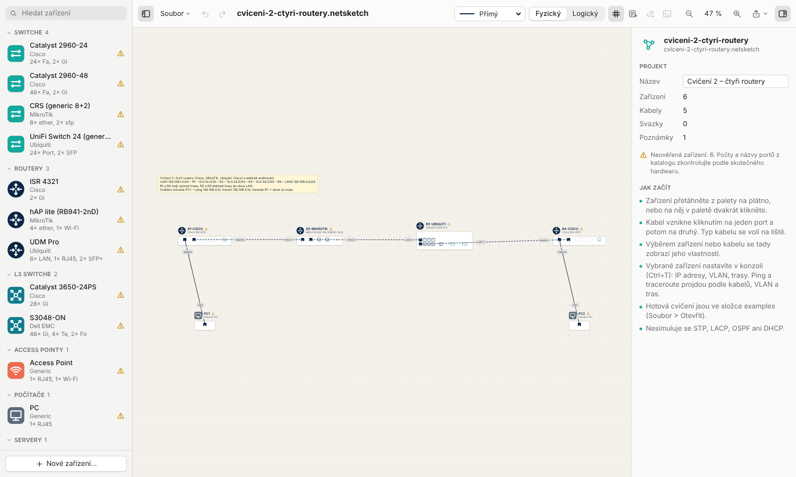
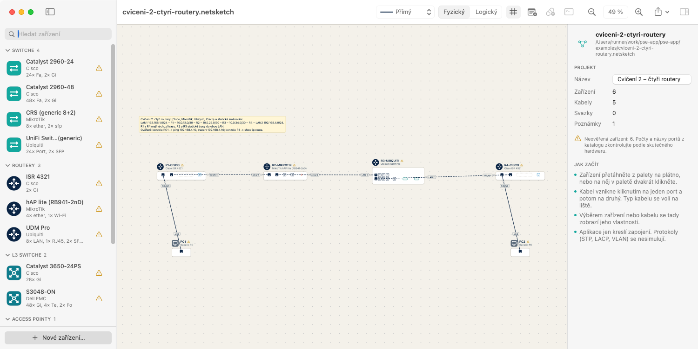
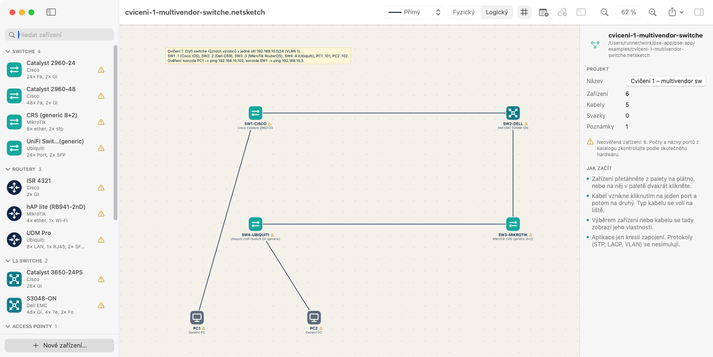
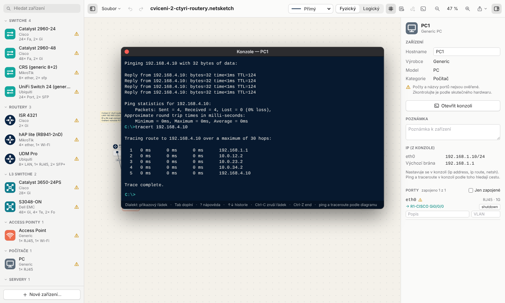
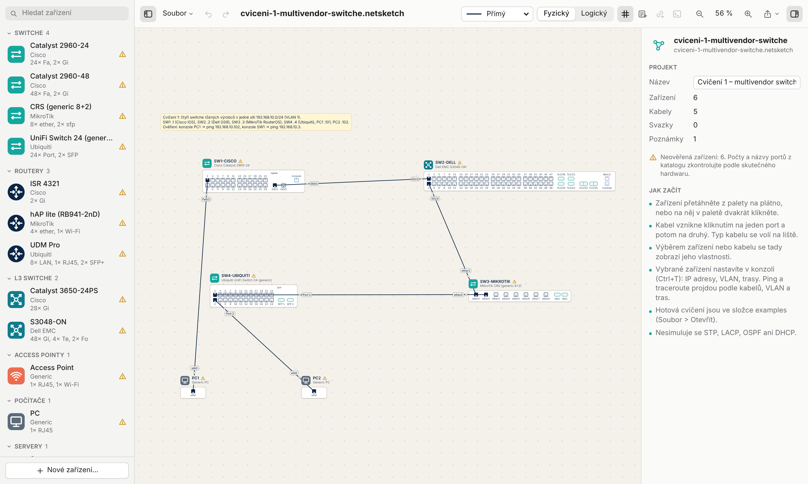
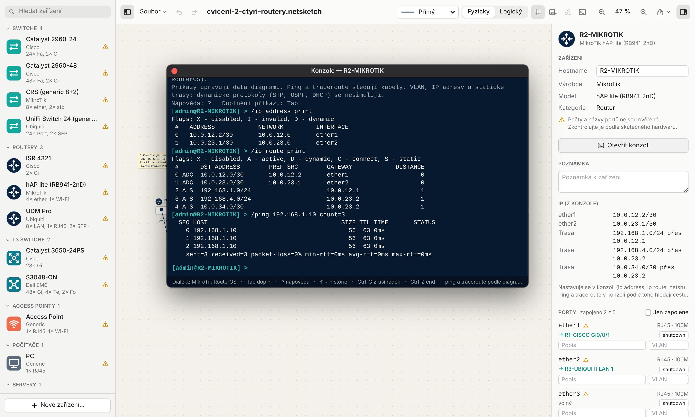
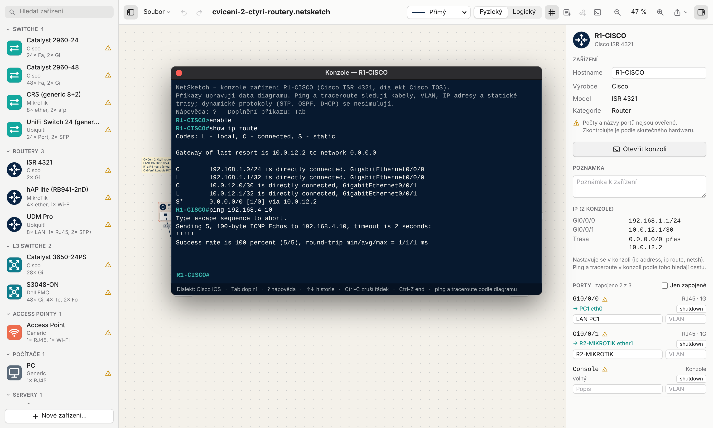

Návod k editoru síťové topologie s konzolemi Cisco, Dell, MikroTik a PC a se simulací pingu. Soukromá cvičná aplikace studenta.

NetSketch je soukromý kreslicí a cvičný nástroj studenta pro počítačové sítě ve stylu Cisco Packet Tracer (není to nástroj UJEP). Síť se nakreslí ze skutečných zařízení z laboratoře, nastaví se v konzolích jejich vlastními příkazy a ping a traceroute ukážou, jestli je zapojení a konfigurace správně.
C:\>).ping a traceroute.examples/ a export diagramu do PNG, SVG a PDF.| Verze | Kde běží | Kdy použít |
|---|---|---|
Webová (web/) | v prohlížeči na Windows, Linuxu i macOS | všude; na školních počítačích by měla fungovat také (viz kapitola 2, Na školních počítačích) |
| macOS aplikace | macOS 14 a novější | na Macu jako běžná aplikace |
Obě verze otevírají stejné soubory .netsketch a chovají se stejně. Konzole vypisují do znaku stejný text.
Potřeba je jen Node.js 20 nebo novější (node --version). V adresáři repozitáře:
$ cd web $ npm install # jen poprvé $ npm start # otevře http://localhost:5173
Rovnou se cvičením: http://localhost:5173/#cviceni-1 nebo #cviceni-2.
Webová verze by měla jít používat i na školních počítačích. Pro bezpečnost to podle jejího návrhu znamená:
ping, traceroute a ostatní příkazy jsou jen simulace nad nakresleným diagramem, do sítě se nic neodesílá.Ke spuštění z repozitáře je potřeba Node.js a npm install, který stahuje balíčky z registru npm. Kde to na školním počítači nejde, je potřeba verze nahraná na webovém serveru.
Potřeba jsou Command Line Tools (xcode-select --install), Xcode není nutný.
$ swift run NetSketch # spustí aplikaci $ scripts/make-app.sh # vytvoří build/NetSketch.app $ open build/NetSketch.app
https://github.com/zdenax/pse-app. Stáhnout ho jde přes git clone nebo tlačítkem Code › Download ZIP. Po git pull stačí znovu spustit stejný příkaz.
| Část | K čemu slouží |
|---|---|
| Paleta (vlevo) | Katalog zařízení podle kategorií s vyhledáváním. Trojúhelník znamená, že počty portů ještě nejsou ověřené na skutečném hardwaru. |
| Lišta (nahoře) | Soubor, zpět a znovu, typ kabelu, fyzický nebo logický pohled, mřížka, poznámka, svazek linek, konzole, zoom, export, inspector. |
| Plátno (uprostřed) | Diagram. Ve fyzickém pohledu přední panely s porty, v logickém jen ikony a linky. |
| Inspector (vpravo) | Vlastnosti vybraného zařízení, kabelu nebo projektu: hostname, poznámka, VLAN, IP adresy, porty a jejich popisy. |

Konzoli otevře tlačítko s ikonou terminálu na liště nebo „Otevřít konzoli“ v inspectoru u vybraného zařízení. V macOS aplikaci také Cmd+T. Každé zařízení má vlastní okno konzole; zavření okna konzoli nezruší, exit ano.
| Klávesa | Co udělá |
|---|---|
Tab | doplní příkaz nebo ukáže možnosti |
? | nápověda k tomu, co je napsané |
↑ ↓ | historie příkazů |
Ctrl+C | zruší rozepsaný řádek |
Ctrl+Z | konec konfigurace (jako end) |
| Zařízení | Konzole |
|---|---|
| Cisco (Catalyst, ISR) | Cisco IOS: enable, configure terminal, show … |
| Dell S3048-ON | Dell OS9: configure, VLAN přes interface vlan N |
| MikroTik | RouterOS: menu /interface, /ip address, /ip route |
| Ubiquiti, Netgear, ostatní | obecná syntaxe ve stylu Cisco IOS (konzole to při otevření napíše), důvod viz kapitola 11 |
| PC, server | příkazový řádek C:\>: ipconfig, netsh, ping, tracert |
Všechno, co se v konzoli nastaví, se hned projeví v diagramu a v inspectoru a jde vrátit přes Zpět.
| Zařízení | Adresa | Trasa a brána |
|---|---|---|
| Cisco router | interface gi0/0/0ip address 10.0.0.1 255.255.255.0 | ip route 0.0.0.0 0.0.0.0 10.0.0.2 |
| Cisco switch | interface vlan 1ip address 192.168.10.1 255.255.255.0 | ip default-gateway 192.168.10.254 |
| Dell OS9 | interface vlan 1ip address 192.168.10.2/24 | ip route 10.9.0.0/16 192.168.10.254 |
| MikroTik | /ip address add address=10.0.12.2/30 interface=ether1(switch: interface=bridge) | /ip route add dst-address=192.168.1.0/24 gateway=10.0.12.1 |
| PC | netsh interface ip set address eth0 static 192.168.1.10 255.255.255.0 192.168.1.1(poslední adresa je výchozí brána) | |
R1> enable R1# configure terminal R1(config)# interface gi0/0/0 R1(config-if)# ip address 192.168.1.1 255.255.255.0 R1(config-if)# no shutdown R1(config-if)# exit R1(config)# ip route 0.0.0.0 0.0.0.0 10.0.12.2 R1(config)# end R1# show ip route
switchport mode access a switchport access vlan 10, mezi switchi switchport mode trunk. Ping projde jen mezi zařízeními ve stejné VLAN, pokud mezi nimi není router.Ping sleduje nakreslené kabely, VLAN, IP adresy a trasy. Když neprojde, konzole česky napíše, kde a proč se paket zastavil (například „R2 nemá trasu do sítě…“).

ipconfig, ping 192.168.4.10 a tracert přes čtyři routery.| Zařízení | Ping | Traceroute |
|---|---|---|
| Cisco, Dell, Ubiquiti | ping 192.168.4.10 | traceroute 192.168.4.10 |
| MikroTik | /ping 192.168.4.10 count=3 | – |
| PC, server | ping 192.168.4.10 | tracert 192.168.4.10 |
Soubor examples/cviceni-1-multivendor-switche.netsketch. Čtyři switche různých výrobců zapojené za sebou v jedné síti 192.168.10.0/24 (VLAN 1), na krajích dvě PC.

| Zařízení | Adresa | Kde se nastavuje |
|---|---|---|
| SW1-CISCO (Catalyst 2960) | 192.168.10.1/24 | interface vlan 1 |
| SW2-DELL (S3048-ON) | 192.168.10.2/24 | interface vlan 1 |
| SW3-MIKROTIK (CRS) | 192.168.10.3/24 | /ip address … interface=bridge |
| SW4-UBIQUITI (UniFi) | 192.168.10.4/24 | interface vlan 1 |
| PC1, PC2 | .101 a .102 | netsh … |
Ověření: konzole PC1, ping 192.168.10.102; konzole SW1, ping 192.168.10.3.
Soubor examples/cviceni-2-ctyri-routery.netsketch. Routery Cisco, MikroTik, Ubiquiti a Cisco za sebou, mezi nimi sítě /30, na krajích LAN s PC. R1 a R4 mají výchozí trasu, R2 a R3 statické trasy do obou LAN.
| Síť | Mezi |
|---|---|
| 192.168.1.0/24 | PC1 (.10) – R1 (.1) |
| 10.0.12.0/30 | R1 (.1) – R2 (.2) |
| 10.0.23.0/30 | R2 (.1) – R3 (.2) |
| 10.0.34.0/30 | R3 (.1) – R4 (.2) |
| 192.168.4.0/24 | R4 (.1) – PC2 (.10) |

Ověření: konzole PC1, ping 192.168.4.10 a tracert 192.168.4.10; konzole R1, show ip route. Zkuste na R3 smazat trasu (no ip route 192.168.1.0 255.255.255.0) a podívejte se, co ping napíše; Zpět ji vrátí.
.netsketch (JSON). Obě verze aplikace je otevřou.
show ip route a ping do LAN 2.Zařízení UniFi (UDM Pro, UniFi Switch, USG) se ve skutečnosti nenastavují příkazovou řádkou, ale ve webovém rozhraní UniFi Network (Controller). Změny udělané ručně v jejich konzoli Controller při další synchronizaci přepíše. Skutečné konfigurační CLI mají jen routery s EdgeOS (EdgeRouter, a v omezené míře USG): configure, set interfaces ethernet eth0 address …, commit, save.
| Zařízení | Konzole v NetSketch |
|---|---|
| Ubiquiti UDM Pro, UniFi Switch 24 | obecná syntaxe ve stylu Cisco IOS. Zjednodušení místo nastavení v Controlleru, na kterém stojí i cvičení 1 a 2. |
| Ubiquiti USG Pro 4, EdgeRouter X | zatím obecná syntaxe ve stylu Cisco IOS. Konzole EdgeOS (set / commit) se připravuje. |
| Netgear FS726T | obecná syntaxe ve stylu Cisco IOS (skutečný přepínač se nastavuje ve webovém rozhraní). |
NetSketch počítá dosažitelnost podle zapojení a konfigurace, není to emulátor firmware. Zatím se nesimuluje:
Na DHCP, ACL, NAT, OSPF a RIP, STP, LACP a na časech odezvy se pracuje, a to jen ve webové verzi. Příkazy, které diagram zatím neumí uložit, konzole přijme a napíše poznámku „NetSketch: …“, že se nic nezměnilo.
Projekt vznikl s výrazným využitím nástroje generativní AI Claude Code (Anthropic) podle zadání a pokynů autora; podrobné prohlášení je v souboru README v repozitáři.